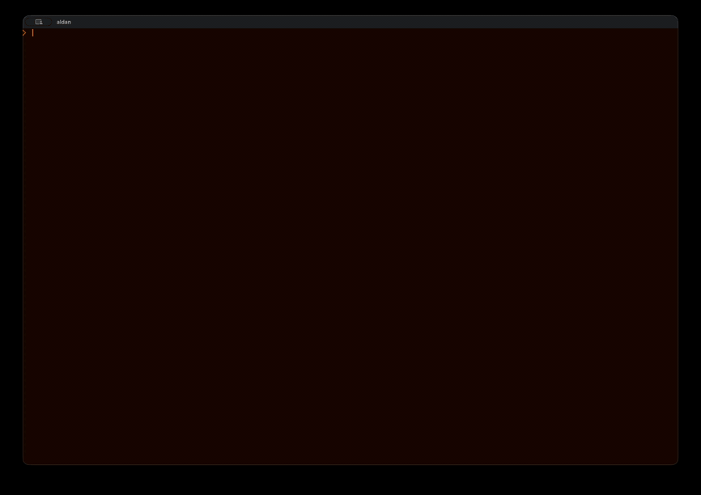
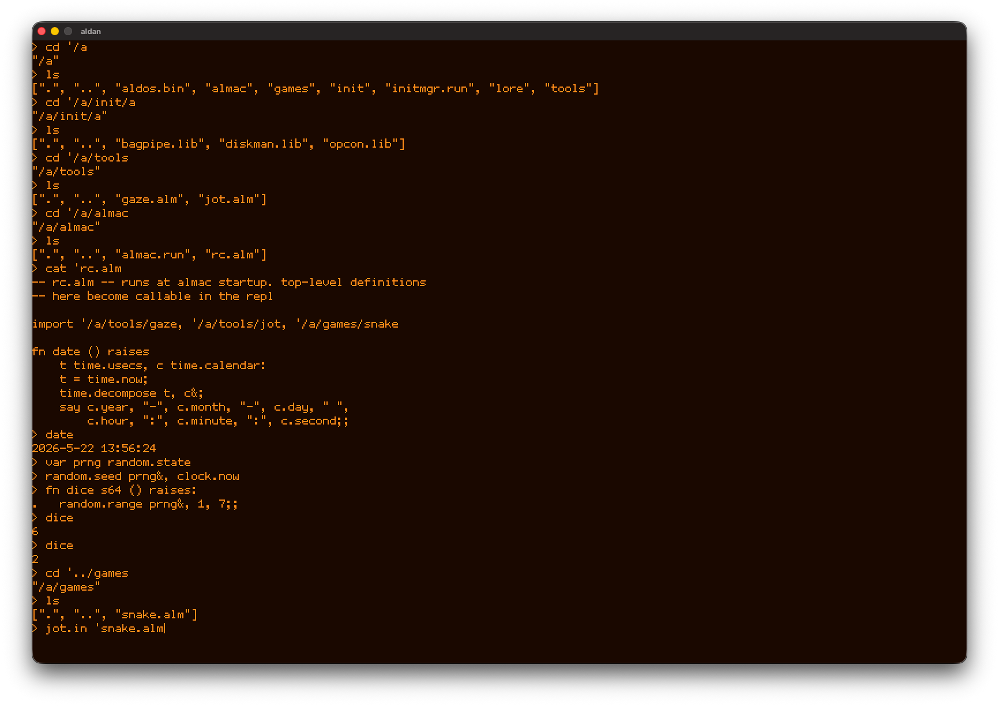
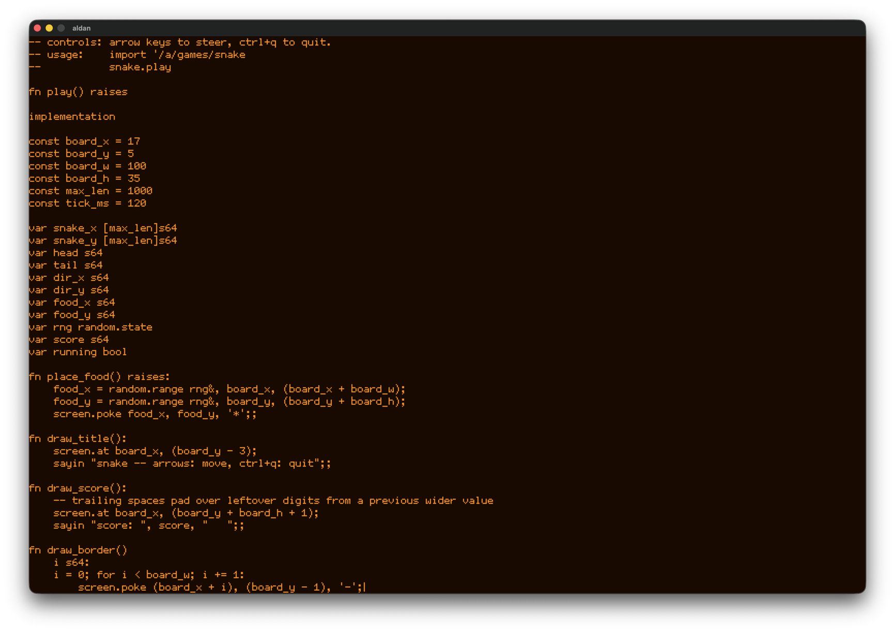
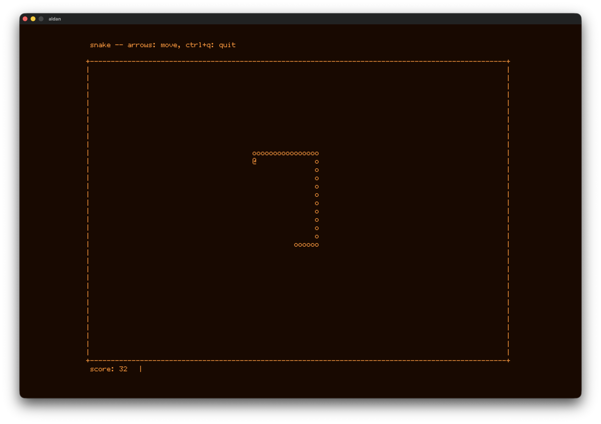
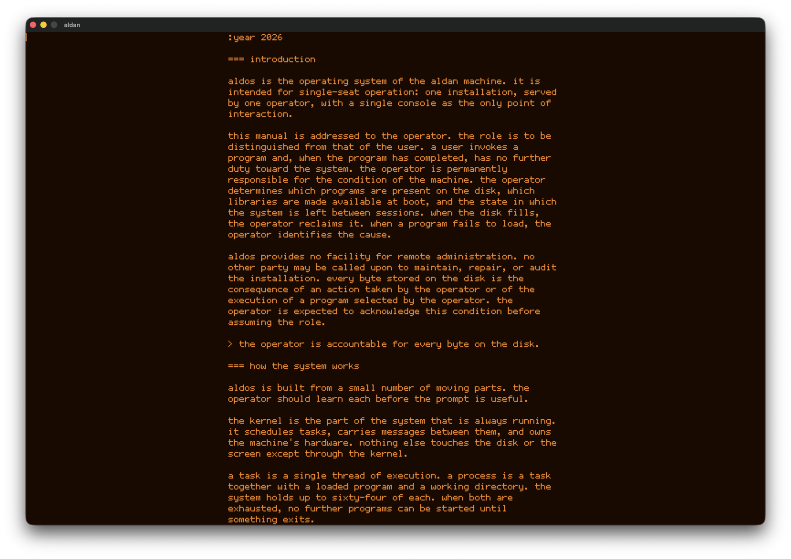

aldan 4

a fantasy computer.
theses
- programming is play
- the roads the industry skipped are still worth walking
- the machine answers only to its operator
- the computer is a space for inquiry, not a channel for consumption
- a machine is something to talk to, not paw at
- ownership extends only to what one mind can grasp
- security through surveyability
specifications
- rv64 cpu
- 2 mb ram
- 256 mb hdd
- 135x45 monochrome alphanumeric display
downloads
codex
screenshots




bulletins